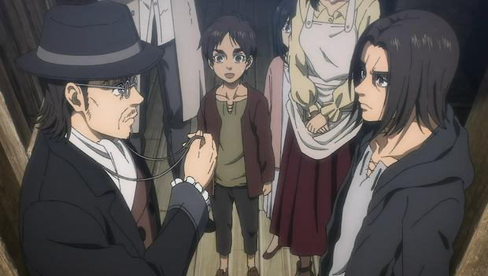

The Yeager family (イェーガー家 Yēgā-ke?) is an Eldian family that lives both inside and outside the Walls. Most of them live outside, in the Liberio internment zone.[1] One of them, Grisha Yeager, went inside and started a new family in Shiganshina District on the southern edge of Wall Maria.
The Yeager family were descendants of Eldians who stayed in Marley after the Great Titan War. They lived in the internment zone in Liberio, where people like them were forced to stay by the government. One day, Grisha and his little sister Faye left the ghetto without permission in order to follow a blimp flying in the sky. They crossed a town before eventually reached their goal. As they watched the blimp landing, two Marley soldiers noticed them and asked them if they had a permit exit to leave the Liberio internment zone. Grisha admitted they did not and chose to take his sister's punishment with his. One of them led Faye away while the second beat Grisha. When he got back home, Faye was not here.[2] The two soldiers Grisha met earlier came and explained to the parents they found their daughter's body but did not know the cause of her death. In addition, they scolded them for their children's behavior and advised them to teach Grisha their ancestors' history, which Yeager did.[3]
